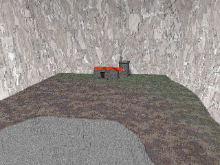

Raytracing with POV-Ray
Both images used in this chapter of the Chronicle were created using
POV-Ray, an amazing free raytracer.
Both images are quick little things, each taking about an hour to
construct and render.

The first image shows the fortress in the high mountain valley.
The textures of the rocks and valley floor aren't quite right, but for
purposes of illustration its probably good enough. The keep has considerably
more detail than is apparent in the image; it may be used again in a future
image.
The mountain, valley floor, and ravine are generated a
height_field. The keep is constructive solid geometry of cylinders and
boxes. The image source is available.

The second image shows the rough hewn tunnel leading back into
the mountain. The wall is constructed of boxes (a single plane with a brick
texture looked too hokey). The tunnel is subtracted out of the wall as a
superellipsoid. Numerous small spheres cut gouges out of the edges of the
tunnel, to make it look more realistic. The image
source is available.